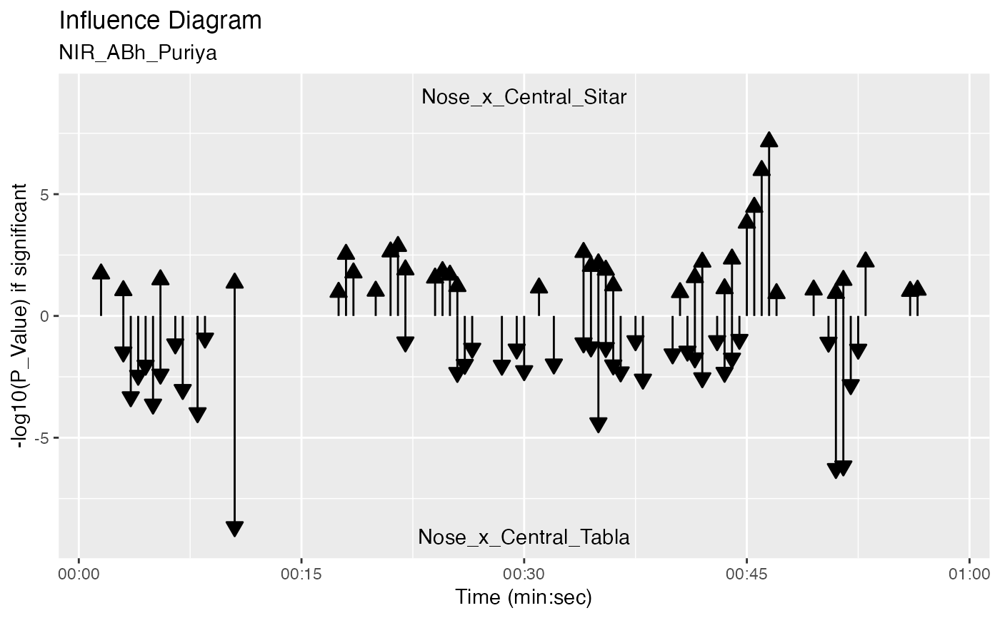
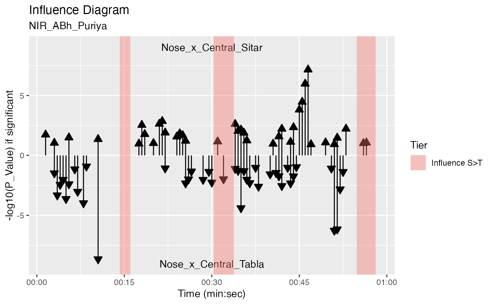

Plot influence diagram from a GrangerTest object
plot_influence_diagram.RdArrows show causality (influencing) direction.
Arguments
- obj
GrangerTest object
- splicing_df
Splicing data.frame object
- two_arrows
plot influence arrows both ways? (Default is TRUE).
- lev_sig
significance level
Details
By default two_arrows is TRUE and an influencing arrow is drawn for each
significant p-value. If two_arrows is FALSE and one
of the p-values is signficant then -log10(p_value) difference is plotted i.e
See also
Other Granger Causality:
autoplot.GrangerTime(),
get_granger_interactions(),
granger_test(),
map_to_granger_test(),
ms_condgrangertest(),
ms_grangertest1(),
ms_grangertest2(),
plot.GrangerInteraction()
Examples
r1 <- get_sample_recording()
fv_list <- get_filtered_views(r1, data_points = "Nose", n = 41, p = 3)
jv_sub <- get_joined_view(fv_list)
splicing_df <- splice_time(jv_sub, win_size = 3, step_size = 0.5)
sv <- get_spliced_view(jv_sub, splicing_df)
g <- granger_test(sv, "Nose_x_Central_Sitar", "Nose_x_Central_Tabla", lag = 3/25)
plot_influence_diagram(g, splicing_df)
#> Warning: Removed 78 rows containing missing values (`geom_segment()`).
#> Warning: Removed 75 rows containing missing values (`geom_segment()`).

plot_influence_diagram(g, splicing_df, two_arrows = TRUE)
#> Warning: Removed 78 rows containing missing values (`geom_segment()`).
#> Warning: Removed 75 rows containing missing values (`geom_segment()`).
d1 <- get_duration_annotation_data(r1)
plot_influence_diagram(g, splicing_df) +
autolayer(d1, expr = (Tier == "Influence S>T" | Tier == "Influence T>S") & Out <= 60,
fill_col = "Tier")
#> Warning: Removed 78 rows containing missing values (`geom_segment()`).
#> Warning: Removed 75 rows containing missing values (`geom_segment()`).
